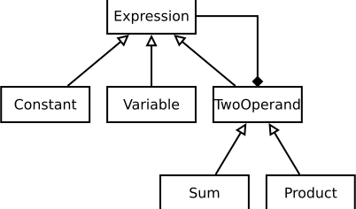

Osztályhierarchiák C++11-ben
Czirkos Zoltán · 2019.03.19.
Az öröklés és néhány jellegzetes tervezési elv a C++11-ben. Privát virtuális függvények, non-virtual interface. Override, final kulcsszavak. Virtuális konstruktorok.
A feladatunk így hangzik: „Tervezzünk osztályhierarchiát, amelynek segítségével négy alapműveletből álló, egyváltozós matematikai függvények tárolhatók! Legyenek ezek a kifejezések kiírhatóak, kiértékelhetőek, és aztán később majd deriválhatóak is.” Ilyen kifejezés például az 4*(5+x): ez egy konstans és egy összeg szorzata, ahol az összeg operandusa egy konstans és egy változó.
Az ehhez hasonló, gyakran matematikai példák azért érdekesek, mert a legtöbb objektumorientált tervezési elv „matematikai tisztaságban” bemutatható rajtuk keresztül. Ahogyan az örökléssel kapcsolatos C++11 nyelvi elemek is.
Az OOP tervezés egyik ökölszabálya, hogy a feladat megfogalmazásában lévő főnevekből lesznek az osztályok, az igékből meg a tagfüggvények. A feladat általánosságban kifejezésekről beszélt, és azt mondta, ezekkel a kifejezésekkel lehet műveleteket végezni, kiírni, kiértékelni őket. Ez arra utal, hogy kell legyen egy kifejezés osztály a következő tagfüggvényekkel:
class Expression {
public:
/* returns value of expression at x */
virtual double evaluate(double x) const = 0;
virtual ~Expression() = default; // C++11
private:
/* outputs expression as string to stream os */
virtual void print(std::ostream &os) const = 0;
friend std::ostream & operator<<(std::ostream & os, Expression const &e);
};
/* pass print request to virtual print() method */
std::ostream & operator<<(std::ostream & os, Expression const &e) {
e.print(os);
return os;
}A kiértékelés és a kiírás tagfüggvényei virtuálisak, mivel a kifejezés típusától
függő működésük lesz. Sőt tisztán virtuálisak, mert amíg nem tudjuk pontosan, milyen
típusú kifejezésről van szó, addig a működésüket sem tudjuk megadni. Az
Expression osztály így egy absztrakt alaposztály (abstract base class). Az
egyik célja, hogy közös ősként szolgáljon a leszármazottak számára: a C++ számára is
ki kell fejeznünk a kifejezések közötti kapcsolatokat, hogy utána engedje pl. a pointerek
konverzióit. Másik célja pedig az, hogy ígéreteket tegyen a leszármazottak nevében:
„ha te egy kifejezés szeretnél lenni, akkor tudnod kell, hogyan kell téged kiértékelni
és kiírni”. Az osztály a tisztán virtuális függvényeken kívül semmit nem tartalmaz;
az ilyen osztályt interfésznek is szokták nevezni. Némely nyelvekben erre külön nyelvi
elem van; a C++ tisztán virtuális függvényekkel fejezi ezt ki.
Az Expression osztály tartalmaz egy destruktort is. Ez csak azért
van ott, hogy jelezzük a fordítónak, virtuális destruktort szeretnénk. A programunkban
az öröklődések miatt sok Expression* pointert fogunk használni; fel kell készülnünk
arra, hogy valaki egy ilyen típusú pointert delete-el. Ökölszabályként
elmondható ez is: ha egy osztályban akár csak egyetlen egy virtuális függvény is van,
akkor biztos, hogy virtuális destruktor kell neki.
Ezt az ökölszabályt kicsit lehet pontosítani is: egy alaposztály
destruktora legyen publikus és virtuális, vagy legyen védett (protected) és
nemvirtuális. Az utóbbi esetben a destruktor védettsége megakadályozza az ősosztály
pointere felőli delete-elést, ami nem virtuális destruktor esetén problémát
jelentene.
A destruktorba amúgy nem tennénk semmit, bár deklarálni mindenképp kell, hogy a virtuális voltát jelezni
tudjuk. Régen ezt egy üres függvénytörzzsel oldottuk meg. A C++11 óta = default-ot is lehet a
függvény mögé írni, ezzel jelezve, hogy az a destruktor, amit amúgy magától is írna a fordító helyettünk,
megfelelő és elfogadjuk. Ez jobb is, mint az üres függvénytörzset kiírni. Később majd lesz róla szó, miért.
Az osztályhoz tartozó kiíró operátor csak annyit tesz, hogy a kifejezés virtuális
print() függvényének továbbpasszolja a kérést. Bár a kiíró operátor maga
globális függvény, és mint olyan, nem lehetne virtuális, ezzel a trükkel mégis
hasonló működést lehet elérni. A virtuális függvény pedig priváttá is tehető, mert azzal általában senki másnak nem lesz dolga, csak
a kiíró operátornak.
A privát korlátozás azért előnyös, mert így könnyebb jól használni az osztályt: a programozó, aki új osztályt szeretne származtatni ebből, látni fogja, hogy 1), meg kell valósítania a függvényt (mert tisztán virtuális), ugyanakkor tudja azt is, hogy 2) semmi egyéb dolga nincsen vele (mert privát). Ezt a tervezési elvet NVI-nek hívják (Non Virtual Interface). Az NVI név arra utal, hogy egy jól megtervezett osztály interfészén (publikus részén) nem kellene virtuális függvények legyenek, hanem csak a privát részen. Ezt azonban nem mindig tartjuk be.
Hozzunk létre egy konkrét típust is, legyen ez a konstans! A konstans egyfajta kifejezés, amely kiírva egy számként jelenik meg, kiértékelve pedig mindig ugyanazt a számot adja. C++98-ban ezt így fogalmaznánk meg:
class Constant : public Expression {
public:
Constant(double c): c_(c) {}
virtual double evaluate(double) const {
return c_;
}
private:
double c_;
virtual void print(std::ostream &os) const {
os << c_;
}
};A konstans publikusan öröklődik a kifejezésből. Ez az öröklődés fejezi azt ki, hogy a konstans típus a kifejezés altípusa. Vagy másképpen: bármikor, amikor egy kifejezés objektumra van szükségünk, oda jó kell legyen egy konstans típusú objektum is. Ezt a cserélhetőséget, behelyettesítőséget az angol nyelvű szakirodalom LSP-nek nevezi, Liskov Substitution Principle, Barbara Liskov után, aki ezt az elvet először leírta. Vigyázat: csak a publikus öröklés az igazi, OOP értelemben vett öröklés! Csak az fejez ki „minden micsoda micsoda” jellegű kapcsolatot. A C++-os privát öröklés OOP értelemben nem öröklés, másra való, de erről majd később.
Az osztály megvalósítja a két örökölt, absztrakt függvényt, így már konkrét osztállyá
válik; Constant típusú objektumot már hozhatunk létre a programban.
A konstruktora, bár nem látszik, meghívja az ős konstruktorát is (ha nem írunk
semmit, az alapértelmezett konstruktora hívódik); a destruktora úgyszint.
Mindez működne C++11-ben is, de nézzük meg most azt, hogyan írnánk le az új verzióban az előzőnél pontosabban, amit szeretnénk:
class Constant final : public Expression { // C++11
public:
Constant(double c): c_{c} {} // C++11
virtual double evaluate(double) const override { // C++11
return c_;
}
private:
double c_;
virtual void print(std::ostream &os) const override {
os << c_;
}
};
int main() {
Expression *c = new Constant{5.1}; // C++11
std::cout << *c;
delete c;
}Szembetűnő változás az override és a final
kulcsszavak megjelenése. Az override szóval a virtuális függvényeket
lehet megjelölni, és azt jelezzük vele a fordítónak, hogy az ősosztályban kell
lennie egy ugyanilyen nevű függvénynek, amit most felül szándékozunk írni.
Kicsit furcsán hangzik, de ez arra való, nehogy „véletlenül” létrehozzunk egy virtuális függvényt.
Ilyen könnyen előfordulhat egy nagyobb osztályhierarchia refaktorálása közben; ha az alaposztály
egy virtuális függvényének fejlécét megváltoztatjuk, akkor a leszármazottban megadott függvények már
új tagot vezetnének be, nem pedig az ős függvényét írnák felül. Márpedig ha az alaposztály változik ilyen módon,
akkor valószínű a leszármazottnak is változniuk kell; override esetén tud majd szólni a fordító.
Nagy segítség ez egy refaktorálás közben, mert látjuk, hol vannak befejezetlen részek.
Az ellen is véd, ha rosszul implementáljuk a leszármazottat, pl. az evaluate() végéről a const-ot
lefelejtjük. Jelen példában mondjuk amúgy sem fordulna le a program, mert akkor az osztály
absztrakt lenne, és nem tudnánk példányosítani sehol. Viszont egy nagyobb projektben
könnyen lehet, egy nem tisztán virtuális függvény felüldefiniálását rontjuk el hasonló módon. Az
override nélkül csak a tesztelés közben derülne ki a hiba (azt látjuk, hogy mindig az ős függvénye
hívódik), így viszont már fordítási időben.
A final kulcsszót az osztály neve vagy virtuális függvény
neve után használhatjuk. Azt jelenti, hogy végleges, azaz tovább már nem módosítható.
Osztály esetén erre a leszármazást fogja tiltani a fordító, virtuális függvény esetén
pedig a leszármazottakban a további felülírást. A Constant osztályt
nem arra tervezzük, hogy le lehessen belőle származni a továbbiakban, ezért
megjelölhetjük final-ként.
Miért jó az, ha nem engedjük, hogy az osztályból le lehessen származni? Egyszerűen azért, mert az osztályok
kétfélék: vagy arra tervezzük, hogy ősosztály legyen, vagy nem. Ha nem, akkor viszont előbb-utóbb gond lesz a leszármazásból.
Gondoljunk például arra, ha egy osztálynak nincs virtuális destruktora. Vagy egy std::vector<T>::iterator-ra: ez
lehet osztályként is implementálva, de lehetne akár egy egyszerű T* is. Jobb, ha senki nem próbál leszármazni
belőle.
A final és override „kulcsszavak” egyébként nem is igazi kulcsszavai a nyelvnek,
hanem csak ezeken a helyeken van speciális jelentésük (context specific keyword, CSK). Így például nevezhetünk
final-nek egy változót. Ezzel szemben pl. a class igazi kulcsszó, class nevű változó nem
létezhet.
A kevésbé szembetűnő, viszont annál furcsább változás, a konstruktorhívásoknál
a kerek zárójelek () helyett használt kapcsos zárójel
{}. Ezeket a konstruktorhívások paraméterei köré tehetjük; az új
nyelvi elem neve: uniform initialization syntax. Előnye, hogy egyformán
inicializálhatók vele az objektumok, akár van konstruktoruk, akár nincs; és hogy
nem keverhető össze szintaktikailag a függvényekkel.
Miért volt szükség az új inicializáló szintaxisra?
A régi C++-nak sok szintaktikai problémája volt az objektumok inicializálása körül. Az egyik legzavaróbb az volt, hogy a konstruktorhívás gyakran összekeverhető volt a függvénydeklarációval (the most vexing parse). Tegyük fel, hogy van egy
Complexosztályunk, és néhány további kódsor:class Complex { public: Complex(double re = 0.0, double im = 0.0); }; Complex c1(2.3, 3.4); Complex c2(2.3); Complex c3();A
c1-es sorral egy objektumot adunk meg, meghívva az osztály kétparaméterű konstruktorát. Ez történik ac2-es sornál is, kihasználva az alapértelmezettim = 0.0paramétert. Viszont nem ez történik ac3-as sorban: ott nem a 0 értékű számot hozzuk létre are = 0.0alapértelmezést is kihasználva, hanem helyette egyc3()nevű függvényt deklarálunk, paraméter nélkül,Complexvisszatérési értékkel. Itt kötelezően el kell hagyni az üres zárójelpárt, hogy tényleg az alapértelmezett konstruktort kapjuk:Complex c3;az objektumdefiníció.Ez azért is zavaró, mert ezzel szemben egy
c1-gyel megegyező értékű, ideiglenes objektumot aComplex(2.3, 3.4)szintaktikával, a 0 értékű ideiglenes objektumot aComplex()szintaktikával kell létrehoznunk (pl.std::cout << Complex()), és az utóbbinál nem hagyható el az üres zárójelpár. És ez csak a legegyszerűbb példa volt. Fejlesztő legyen a talpán, aki az alábbi kódrészletnél elsőre megmondja, hogy ac2függvény lesz, nem pedig objektum! Csak keressük, hol az a konstruktor, amelyik kétComplex-et vesz át, mert a fordító elfogadja a sort.Complex c1(2.3); Complex c2(Complex(c1), Complex());A régi szintaxis különbözött a struktúráknál használt inicializáló listától is. Ha egy osztálynak definiáltunk konstruktort, a kerek zárójelet kellett használjuk, azonban ha nem, akkor pedig a C-s inicializálást:
struct Complex { double re, im; }; Complex c1 = {2.3, 3.4};Az új, kapcsos zárójeles szintaxis előnye, hogy sehol nem keverhető össze a függvényekkel. Sok helyen azt is lehetővé teszi, hogy a típus kiírását elhagyjuk:
class Complex { public: Complex(double re = 0.0, double im = 0.0); }; Complex fv1() { return {2.3, 3.4}; // C++11 } void fv2(Complex); Complex c1{2.3, 3.4}, c2{2.3}, c3{}, c4 = {2.3, 3.4}; // C++11 fv2({2.3, 3.4}); // C++11Érdemes a két függvénynél leírtakat összevetni a C99 compound literal szintaxisával, egész hasonlítanak.
A kapcsos zárójeles szintaxis további újdonsága, hogy a konverziókat is szigorúbban veszi. Míg a kerek zárójeles esetben megengedett volt az „adatvesztéses” (narrowing) konverzió, a kapcsos zárójeles inicializálás már nem engedi meg azt. Ez lényegtelen, értelmetlen dolognak tűnhet, de gondoljunk arra, hogy ilyen kódrészleteket nem csak explicite lehet leírni, hanem sablonok példányosítása közben is „kialakulhat” ilyen.
int i1 = 3.4; /* szabad, de 3 lesz */ int i2(3.4); /* ez is 3 lesz */ int i3{3.4}; /* fordítási hiba */ unsigned i4{-2}; /* fordítási hiba */
A kifejezéses programunkban egyváltozós függvényeket szeretnénk megadni. A változó is egy kifejezés, amely kiírva „x”-ként jelenik meg, kiértékelve pedig mindig azt az értéket adja, ahol kiértékeljük:
class Variable final : public Expression {
public:
virtual double evaluate(double x) const override {
return x;
}
private:
virtual void print(std::ostream &os) const override {
os << 'x';
}
};Furcsa egy osztály lett, olyan mintha nem csinálna semmit, mivel nincs
adattagja. Az ősosztályából nem örökölt, ő maga meg nem adott hozzá sajátot. De
ne gondoljuk azt, hogy egy Variable objektum üres, igenis tartalmaz
információt: mégpedig azt, hogy ő egy Variable, nem pedig egy
Constant. A típusa az információ, és az,
hogy a virtuális függvényeket másképp implementálja, mint a többiek.
Az összeget és a szorzatot vizsgálva rájöhetünk, hogy két nagyon hasonló műveletről van szó. Mindkettőre igaz, hogy:
- Két operandussal dolgoznak.
- A kiértékelésük előtt ki kell értékelni a két operandusukat. (A különbség csak annyi, hogy az így kapott két értékkel mást kell csinálni.)
- A kiírásuk így működik: első operandus kiírása, műveleti jel, második operandus kiírása.
Ez azt sugallja, hogy kellene nekik egy közös ős, amiből aztán leszármazhatnak, és ők maguk csak a különbségeket kell megvalósítsák virtuális függvényként.
A kétoperandusú osztály tehát hivatkozik két másik kifejezés objektumra. Azoknak a típusát nem ismerjük, de ez nem gond; mind a kiértékelés, mind a kiírás virtuális függvények, és hívásukkor majd tudják, mi a teendő. (A leszármazott tartalmazza az őst: az ilyet az OOP-ben kompozit objektumnak nevezzük.) A kódolásnál arra kell figyelni, hogy bár csak két operandus van, nem egy nagy tárolóról van szó, ez mégis egy heterogén kollekció: a két kifejezés objektumra pointert kell tárolnunk. Rögzítsük most a tervezésnél azt is, hogy a két hivatkozott kifejezés objektumért a kétoperandusú objektum fog felelni: ha az utóbbi megszűnik, az előbbieknek is meg kell szűnniük.
class TwoOperand : public Expression {
public:
/* create object, adopt dynamically allocated expressions */
TwoOperand(Expression *lhs, Expression *rhs) : lhs_{lhs}, rhs_{rhs} {}
~TwoOperand() {
delete lhs_;
delete rhs_;
}
/* no copy construction */
TwoOperand(TwoOperand const &) = delete; // C++11
/* no copy assignment */
TwoOperand & operator=(TwoOperand const &) = delete; // C++11
virtual double evaluate(double x) const override final { // C++11
return do_operator(lhs_->evaluate(x), rhs_->evaluate(x));
}
private:
virtual void print(std::ostream &os) const override final {
os << '(' << *lhs_ << get_operator() << *rhs_ << ')';
}
/* subclass has to provide function to return its operator char */
virtual char get_operator() const = 0;
/* subclass has to provide function to do the calculation */
virtual double do_operator(double lhs, double rhs) const = 0;
/* left and right hand side operands */
Expression *lhs_, *rhs_;
};A tagfüggvények vizsgálatát csoportosítva érdemes megtenni. Az első csoportba a konstruktorok és a destruktor tartoznak, a második csoportba pedig a virtuális függvények.
A konstruktor triviális. A neki adott két kifejezésre mutató pointert eltárolja. Mint azt fentebb eldöntöttük, ezek dinamikusan foglalt kifejezések lesznek, amik máshol nem lehetnek hivatkozva, ezért a destruktor fel is szabadítja őket. Máris használjuk az ősosztály virtuális destruktorát!
Külön magyarázatot érdemel a másoló konstruktor és az értékadó operátor. A C++-os osztályok tervezésénél ökölszabály az, ha egy osztálynak szüksége van az 1) destruktor, 2) másoló konstruktor, 3) értékadó operátor közül bármelyikre, akkor valószínűleg szüksége van mind a háromra. Láthatóan az ökölszabály itt is érvényes: egy kétoperandusú objektum lemásolásakor a másolat saját operandusokkal kell rendelkezzen, mert a destruktora fel akarja majd szabadítani azokat. Tehát az objektum másolatában nem lehet a pointerek másolata (sekély másolat), és ezért kellene egy saját másoló konstruktor is. Egyelőre ezt nem tervezzük használni, és az értékadó operátort sem. A gond csak az, ha erről a két tagfüggvényről nem nyilatkozunk az osztályban, akkor a fordító megírja őket helyettünk, jelen esetben pont rosszul.
Ez a C++11-ben már elavultnak számít (deprecated). A szabvány azt
mondja, hogy egy olyan osztálynak, aminek a felhasználó saját destruktort
definiál, a fordító csak figyelmeztetés mellett szabad automatikusan másoló
konstruktort és értékadó operátort írjon, mivel valószínűleg helytelen.
Ezért esetleg az Expression alaposztályt írhatjuk így:
class Expression {
/* ... */
Expression() = default;
Expression(Expression const &) = default;
virtual ~Expression() = default;
};Jelezve, hogy az általa írt másoló konstruktort elfogadjuk. Az alapértelmezett konstruktort is – erre azért van szükség, mert amelyik osztály konstruktorairól nyilatkozunk, annak eredendően nem írna alapértelmezetett.
A rossz másoló konstruktor pedig létezik, és ha létezik, előbb-utóbb valaki
használni is fogja. Akár véletlenül is: elég csak lefelejteni a referencia
& jelét egy függvényparaméterben. A C++11-es = delete
nyelvi elemmel jelezhetjük a fordító és az osztály használói számára, hogy azt a
függvényt szándékosan nem írtuk meg, nem akarjuk, hogy létezzen. Így egy
TwoOperand objektum lemásolása nem futási időben fog kísérteties
memóriahibákhoz vezetni, hanem már fordítási időben jelentkezik.
Ez a nyelvi elem konverziók tiltására is használható. Az alábbi kód pl.
5-öt ír ki a kimenetre, mivel a szokásos double→int
automatikus konverzió eldobja a tizedespont utáni számjegyeket:
void print(int i) { std::cout << i; }
print(5.3);A kódot egy törölt függvénnyel kiegészítve viszont már nem fordul le a kód. Ezzel jelezzük a fordítónak, hogy gondoltunk a függvényre, de az a célunk, hogy ne létezzen:
void print(double d) = delete;A két alaposztályból örökölt függvény, az evaluate() és a
print() megvalósítása final. Mint az fentebb is
szerepelt, a kiértékelés az összes kétoperandusú függvénynél egyformán működik,
csak az operátor (összeadás, szorzás) más. Ha ezt az operátort egy virtuális
do_operator() függvénnyel helyettesítjük, amelyet majd a
leszármazottól várunk el, akkor az evaluate() megvalósítása
véglegessé tehető. A kiírásnál ugyanez történik: zárójel, bal oldali
részkifejezés, operátor, jobb oldali részkifejezés, zárójel. Ez minden
kétoperandusúnál így van, akkor final. A leszármazottak dolga csak
annyi marad, hogy megadják az operátort jelképező karaktert a
get_operator() tagfüggvény megvalósításán keresztül.
Az evaluate() és a print() tagfüggvények jelen
formáját függvénysablonnak nevezik (OOP-értelemben, nem
template-értelemben). A függvénysablon azt jelenti, hogy van egy
kötött tevékenységsorozat, amelyben egy lépést kicserélhetővé teszünk, tipikusan
egy virtuális függvény segítségével.
Érdekessége egy adott tagfüggvény final jelzőjének, hogy a fordítónak segíthet a kód
optimalizálásában is. Jelen példában, ha adott egy Expession* pointer (vagy referencia), az azon keresztül hívott
->evaluate() függvényhívást virtuálisként kell kezelni, mivel nem lehet tudni, hogy az Expression
statikus típus mögött milyen konkrét objektum van dinamikusan (futási időben). Azonban ha egy objektumra TwoOperand*
pointer (vagy leszármazottja) mutat, akkor biztosan a TwoOperand::evaluate() függvényt kell majd hívni, hiszen a
leszármazottak nem írhatták azt felül. Ez nem csak azt jelenti, hogy a virtuális (indirekt) mechanizmus elmaradhat, hanem inline-olásra is lehetőség adódik.
Az előző, TwoOperand osztályba fektetett munkánk most megtérül.
Ha meg kell valósítanunk az összeg osztályt, már csak ennyit kell írnunk:
class Sum final : public TwoOperand {
public:
using TwoOperand::TwoOperand; // C++11
private:
virtual char get_operator() const override {
return '+';
}
virtual double do_operator(double lhs, double rhs) const override {
return lhs + rhs;
}
};A szorzat (Product) osztály ugyanilyen, csak mindkét +
helyére *-ot kell írni.
Az osztály egy új, C++11 nyelvi elemet használ: az új szabvány szerint a
konstruktorok is örökölhetők. A szintaktika jelentése: a TwoOperand
konstruktorai legyenek használhatók a Sum-hoz is. Ez a fordító
számára nem triviális lépés, mert ettől még kell konstruktort írnia; de ezt
ugyanúgy megteszi, mintha a másoló vagy az alapértelmezett konstruktor megírását
bíztuk volna rá. A konstruktorok öröklése annak a körülményes leírását rövidíti,
hogy az új osztály ugyanolyan paraméterű konstruktorokkal kell rendelkezzen, mint
az őse, és ezeknek a konstruktoroknak semmi más dolguk nincs, mint
továbbpasszolni az ős konstruktorának a paramétereket. Tehát a fenti
using-os sor lényegében ennek a szemléletesebb kifejezése:
Sum(Expression *lhs, Expression *rhs) : TwoOperand{lhs, rhs} {}A két osztállyal eljutottunk oda, hogy már tudunk működő
kifejezéseket létrehozni. Próbáljuk ki a programot! Az 5*(3+x)
kifejezést így tudjuk megadni:
int main() {
Expression *c = new Product{
new Constant{5},
new Sum{
new Constant{3},
new Variable
}
};
std::cout << "f(x) = " << *c << std::endl;
std::cout << "f(3) = " << c->evaluate(3) << std::endl;
delete c;
}f(x) = (5*(3+x)) f(3) = 30
Az eddig megírt kódrészletek letölthetők innen: expression1.cpp.
| Függvény | Derivált |
|---|---|
| c | 0 |
| x | 1 |
| a+b | a'+b' |
| ab | a'b+ab' |
A feladat, hogy tanítsuk meg a programot a kifejezések (függvények) deriválására is, először bonyolultnak hangzik. Mivel azonban a kifejezések objektumokból állnak, az egyes objektumok pedig mind ismerik a saját típusukat, könnyen beláthatjuk, hogy a táblázatban látható deriválási szabályok hamar beépíthetők a programba. A deriválás alapszabályai ugyanis éppen azokra a típusokra vonatkoznak, amelyek a programunkban is implementáltunk; a bal oldali oszlop mutatja azt, hogy melyik osztályról van szó, a jobb oldali azt, hogy hogyan viselkedik.
Minden kifejezés deriválható: ez azt jelenti, hogy a kifejezés ősosztályban
kell lennie egy derivative() függvénynek. Egy kifejezés deriváltja
egy másik kifejezés, tehát a metódus visszatérési értéke is egy kifejezés kell
legyen. Egészen pontosan egy kifejezésre mutató pointer, mert nem tudhatjuk,
pontosan milyen típusa lesz, és ezért indirekciót kell használni. Sőt dinamikusan
foglalt kifejezés kell legyen a visszatérési érték, mert a függvényben jön létre,
ugyanakkor a függvény vissztatérte után is megmarad. Végül pedig azt is tudjuk,
hogy ugyan egy kifejezés deriválásakor nem tudjuk, hogy milyen kifejezésről van
szó, ő maga viszont ismeri saját magát, és a saját maga deriválási szabályát:
szóval a deriválás virtuális függvény. Vegyük ezért föl az új tagot az ősbe:
class Expression {
virtual Expression * derivative() const = 0;
};Ha most megpróbáljuk lefordítani a programot, nem fog menni. A C++98-ból
megszokott módon szól a fordító az implementálatlan, tisztán virtuális függvények
miatt is; de a C++11-ben megadott final osztályoknál is külön
jelezni fog, hogy egy osztály nem lehet final, ha még absztrakt. Rá vagyunk
kényszerítve, hogy implementáljuk mindenhol a függvényt. A táblázat alapján ez
könnyű:
Expression * Constant::derivative() const { /* c -> 0 */
return new Constant{0};
}
Expression * Variable::derivative() const { /* x -> 1 */
return new Constant{1};
}
Expression * Sum::derivative() const { /* a+b -> a'+b' */
return new Sum{lhs_->derivative(), rhs_->derivative()};
}
Expression * Product::derivative() const { /* ab -> a'b+ab' */
return new Sum{
new Product{lhs_->derivative(), rhs_},
new Product{lhs_, rhs_->derivative()}
};
}Ez jól számolja a deriváltat (a kiírt kifejezés kézzel egyszerűsíthető, ellenőrizhető), csak van egy kis bökkenő: a felszabadításnál lefagy.
Expression *cd = c->derivative();
std::cout << "f'(x) = " << *cd << std::endl;
delete cd;f'(x) = ((0*(3+x))+(5*(0+1))) Segmentation fault
A problémát egy memóriakezelési hiba okozza, amelyik a Product::derivative()
függvényben rejtőzik. Azt mondtuk ugyanis a TwoOperand osztálynál, hogy
a konstruktora mindig két dinamikusan foglalt objektumot fog kapni (lhs és rhs),
amelyeket örökbe is kell fogadnia. A Product::derivative() függvényben megsértjük
ezt a szabályt, mert olyan kifejezések pointereit adjuk a Product{}
konstruktoroknak, amelyek nem kerülhetnek a tulajdonába. Ez pont ugyanaz a probléma, amiért
eredetileg a TwoOperand osztály másoló konstruktorát is letiltottuk.
Tehát míg az lhs_->derivative() és
rhs_->derivative() paraméterek rendben vannak, az
lhs_ és rhs_ pointerek másolata, azaz sekély másolat (shallow copy) helyett
a kifejezések mély másolatát (deep copy) kellene eltárolni az új
Product objektumokban. Ugyanolyan kifejezéseket, de nem ugyanazokat
a kifejezéseket:
Expression * Product::derivative() const {
return new Sum{
new Product{lhs_->derivative(), rhs_->clone()},
new Product{lhs_->clone(), rhs_->derivative()}
};
}A clone() függvény hatására minden fajta kifejezésnek a saját
típusának megfelelő dinamikus, mély másolattal kell visszatérnie. Változó másolata
változó, szorzat másolata szorzat és így tovább. Ezért az alaposztályban
definiálunk egy clone() virtuális függvényt, amelyet minden
osztályban úgy valósítunk meg, hogy a saját másoló konstruktorát használja. Azaz
Constant osztályban new Constant(*this) lesz,
Product osztályban new Product(*this), és így tovább. A
TwoOperand osztályban törölt (= delete) másoló
konstruktort is most már meg tudjuk valósítani. Pont ez a clone()
függvény hiányzott ahhoz, hogy az működni tudjon, mivel a TwoOperand
nem tudja, hogy a két operandusa milyen típusú. A megvalósítások:
class Expression {
/* return dynamically allocated copy of expression */
virtual Expression * clone() const = 0;
};
virtual Constant * Constant::clone() const {
return new Constant{*this};
}
virtual Variable * Variable::clone() const {
return new Variable{*this};
}
TwoOperand::TwoOperand(TwoOperand const & the_other)
: Expression{*this}
, lhs_{the_other.lhs_->clone()}, rhs_{the_other.rhs_->clone()} {
}
virtual Sum * Sum::clone() const {
return new Sum{*this};
}
virtual Product * Product::clone() const {
return new Product{*this};
}Ezt a jellegzetes C++ tervezési mintát, a clone() függvényt virtuális konstruktornak (virtual constructor)
szokták becézni. Bár nyelvileg nem konstruktorról van szó (a szó szerint vett konstruktor nem lehet virtuális), a szerepe mégis
hasonló. Leggyakrabban heterogén kollekció másolásánál használjuk. Érdekesség, hogy a leszármazottakban a
clone() visszatérési értéke nem feltétlenül kell Expression * legyen, hanem lehet valamely
leszármazott pointere is (neve: covariant return type); jelen esetben természetesen a saját osztály típusa. Ez itt-ott
megkönnyítheti a clone() használatát, ha egy objektum típusáról pontosabb információnk van annál, minthogy az egy
kifejezés.
Az újabb változat linkje: expression2.cpp.
Már csak egy feladatunk van. Az (5*(3+x)) kifejezés deriválása közben a
((0*(3+x))+(5*(0+1))) kifejezést kaptuk, ami elég ijesztően néz ki ahhoz képest,
hogy konstans 5-tel egyenlő. A további deriválás után egy még bonyolultabb
kifejezést kapunk, pedig annak már nulla az értéke. Egyszerűsíteni kellene ezeket
a kifejezéseket.
Az egyszerűsítés nem olyan egzakt fogalom, mint a deriválás. Egy kifejezésnek
pontosan egy deriváltja van, nincs azonban „legegyszerűbb” formája. Legfeljebb
egy olyan alakja, amit a legegyszerűbbnek tartunk vagy szoktunk meg. Attól függően,
hogy mi a dolgunk a kifejezéssel, lehet hasznosabb például az x2-1
forma vagy az (x+1)(x-1) forma. A mostani program ezért csak néhány
alapvető egyszerűsítési lépést fog elvégezni: az egyes műveletek nullelemeit, egységelemeit
fogja kezelni, és a konstansokon végzett műveleteket elvégezni. A deriváltat figyelve
látszik, hogy már ez is sokat segítene.
| Minta | Egyszerűsített |
|---|---|
| a+0 | a |
| 0+a | a |
| c1+c2 | c3 |
| Minta | Egyszerűsített |
|---|---|
| a*0 | 0 |
| 0*a | 0 |
| 1*a | a |
| a*1 | a |
| c1*c2 | c3 |
Az egyszerűsítés használatához ez lehetne az első ötletünk:
Expression *e = new Sum{new Constant{3}, new Constant{4}};
e->simplify();
std::cout << *e; // 7
delete e;Ez azonban semmiképpen nem tud így működni. Ebben a kódrészletben
azt várjuk a kifejezés legfelső összeg objektumáról, hogy cserélje le magát
egy konstans objektumra. Ez azonban lehetetlen; ha az összeg objektumot egy
másik objektumra cseréljük, annak a memóriacíme meg kellene változzon, és
vele együtt az e pointernek is módosulnia kellene. Ehelyett
várjuk el inkább a kifejezésektől azt, hogy adjanak egy új kifejezést
ilyenkor, amely saját maguk egyszerűsített változata:
Expression *e = new Sum{new Constant{3}, new Constant{4}};
Expression *e_s = e->simplify();
std::cout << *e_s; // 7
delete e_s;
delete e;Az interfész új függvénye ezért ugyanolyan fejlécű lesz, mint a deriválás. Ehhez egy alapértelmezett verziót is adhatunk, mégpedig azt, hogy a függvény visszatéri az adott objektum klónjával: így megvalósítani csak ott kell, ahol ténylegesen lehet egyszerűsíteni is. Minden más objektum örökölheti a „nem egyszerűsíthető” megvalósítást:
class Expression {
public:
/* ... */
/* return dynamically allocated, simplified version */
virtual Expression * simplify() const {
return clone();
}
};Az összetett kifejezések egyszerűsítésénél az első lépés a részkifejezések,
pl. az összeg két tagjának egyszerűsítése. Ha azok már a legegyszerűbb ismert
formára vannak hozva, akkor érdemes csak megvizsgálni a típusukat. Ezt a vizsgálatot
a dynamic_cast<> operátorral lehet megtenni. Ez futási időben
ellenőrzi az objektum virtuális függvénytábláját, ami alapján látja, hogy helyes-e
a cast, vagy nem. Ha pointert castoltunk, akkor null pointert ad vissza egy helytelen
cast esetén. A null értékű pointerhez C++11-ben egy új kulcsszót vezettek be,
ez a nullptr.
Nem volt jó a
NULL?A
NULLsosem volt kulcsszó. Eredendően C-ben ez a makró sem létezett, hanem a0egész szám jelképezte a null pointert. A legtöbb helyen ezzel nincs is gond, hiszen a fordító a használatból ki tudja találni, hogy pointerről van szó:int *p = 0; if (p != 0) ...Ez azonban nincs mindenhol így. Vannak helyzetek, ahol a típus nem található ki automatikusan. Ilyen például a változó argumentumszámú függvények paraméterlistája, mint pl. a
printf()-é. Az alábbi sor például hibás, mert a 0 érték egész számként (valószínű 4 bájtos) adódik át, ahelyett hogy null értékű pointerré lenne konvertálva (valószínű 8 bájtos):printf("%p", 0); // HIBÁSEzért az
stddef.h-ban ezért aNULLmakrót(void*)0-ként definiálták, ami működött is, mert C-ben avoid*pointer bármilyen más típusú pointerré átalakítható:C#define NULL ((void*)0)Nincs ez így C++-ban. Ez a nyelv szigorúbban kezeli a típusokat, és nem engedi meg azt, hogy tetszőleges típusú pointerré alakítsunk egy
void*pointert. Így ha ugyanaz lenne aNULLmakró kifejtése, mint C-ben, az alábbi sor fordítási hibához vezetne, mivel egyvoid*→int*konverziót várna el:int *p = NULL;int *p = ((void*) 0);Így C++98-ban ezt eldobták, és a
cstddef-beli makró is csak a C-kompatibilitás miatt volt meg, és így is lehetett definiálva:C++98#define NULL (0)Ezzel azonban megint visszajön a
printf()-es probléma. Sőt, sablonoknál is gondot jelenthet, hiszen váratlanulinttípussal példányosodhatnak pointer helyett.Az egyes fordítóknál ezt különféle, saját kiterjesztésekkel igyekeztek megoldani, de a C++11 előtt ez nem volt egységes. A C++11-ben viszont bevezették a
nullptrkulcsszót: ez egy olyan null pointer literálist ad meg, amely bármely más pointerré konvertálható. A típusastd::nullptr_t.C++11int *p = nullptr;Hasonló ez a
bool–intproblémához. Eltérő a viselkedés, eltérő értékkészlet – nem érdemes egy meglévő típust megpróbálni ráhúzni, mert csak bajok lesznek.
A kifejezések egyszerűsítését a Constant típusú objektumokra építjük,
ezért Constant*-gá kell castolni a pointert. Utána a Constant
osztály újonnan fölvett, get_value() tagfüggvényével lekérdezhetjük
azok értékét. (Éppen az evaluate() is jó lenne, mert bárhol kiértékelhetjük
a konstanst, ugyanazt kapjuk, de így kicsit érthetőbb a kód.)
Expression * Sum::simplify() const {
Expression *lhs_simpl = lhs_->simplify();
Expression *rhs_simpl = rhs_->simplify();
Constant *lhs_cons = dynamic_cast<Constant *>(lhs_simpl);
Constant *rhs_cons = dynamic_cast<Constant *>(rhs_simpl);
if (lhs_cons != nullptr && lhs_cons->get_value() == 0.0) { /* 0 + a = a */
delete lhs_simpl; /* = 0.0 */
return rhs_simpl;
}
if (rhs_cons != nullptr && rhs_cons->get_value() == 0.0) { /* a + 0 = a */
delete rhs_simpl; /* = 0.0 */
return lhs_simpl;
}
if (lhs_cons != nullptr && rhs_cons != nullptr) { /* c + c = c */
double new_value = lhs_cons->get_value() + rhs_cons->get_value();
delete lhs_simpl;
delete rhs_simpl;
return new Constant{new_value};
}
return new Sum{lhs_simpl, rhs_simpl};
}A felismert egyszerűsítési lehetőségeknél figyelni kell arra, hogy
a nem használt objektumokat felszabadítsuk. A c+c esetben például
mindkét egyszerűsített oldalt el kell dobni, csak az összeg marad meg, egy teljesen
új konstans objektumként.
A szorzat egyszerűsítése ehhez hasonló. A harmadik változat linkje: expression3.cpp.
- Jim Hyslop and Herb Sutter: Conversations: Virtually Yours.
- Herb Sutter: Virtuality. C/C++ Users Journal, 19(9), September 2001.
- Bjarne Stroustrup: C++11 FAQ: control of defaults: default and delete.
- Herb Sutter and Bjarne Stroustrup: A name for the null pointer: nullptr.
- Virtual, final and override in C++.